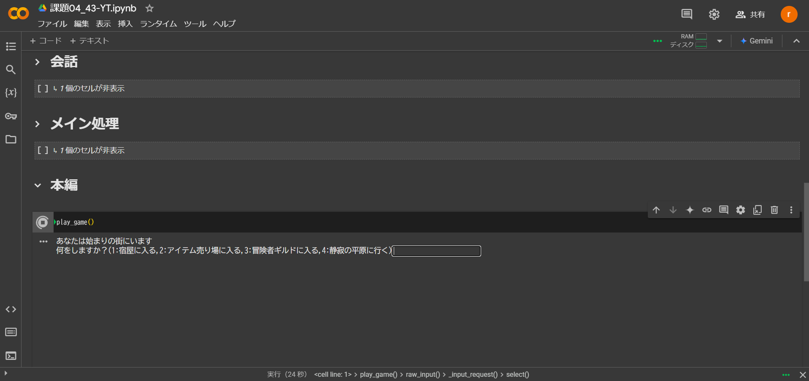
GoogleColabratoryにて作成した簡単なRPG。魔王を倒すために職業を選択し、様々なモンスターと闘いながら成長していく本格的なロールプレイングゲーム。
Yamazoe Taiga
大阪公立大学工業高等専門学校
知能情報コース所属
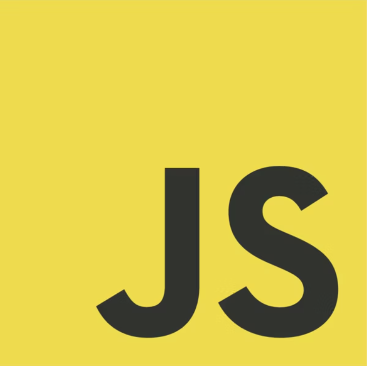
TypeScript
GoogleColabratoryにて作成した簡単なRPG。魔王を倒すために職業を選択し、様々なモンスターと闘いながら成長していく本格的なロールプレイングゲーム。
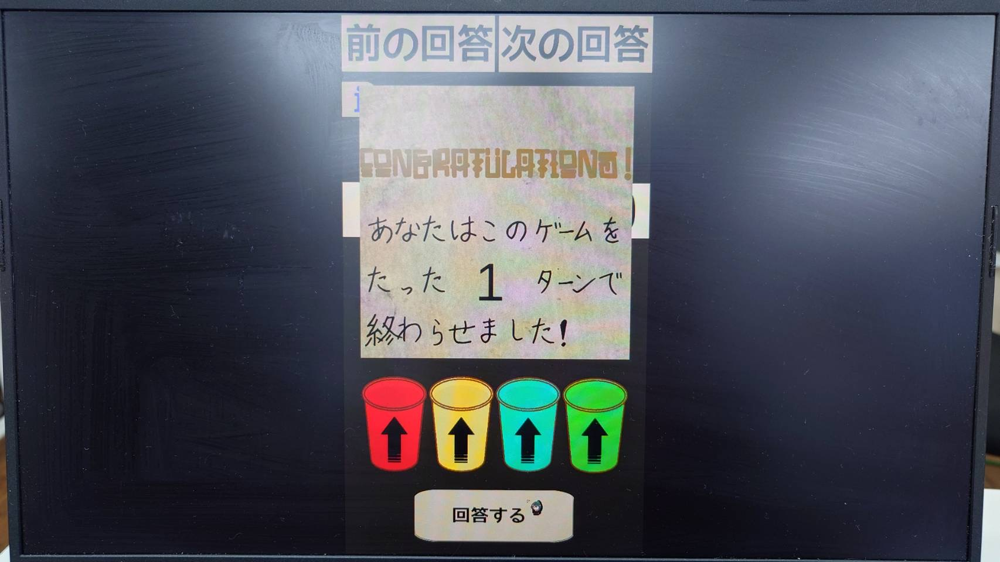
高専祭にてチームで作成したゲーム。ヒントをもとに紙コップの位置と向きを当てるもの。いかに少ないヒントで正解にたどり着くかを競う戦略的なパズルゲーム。
2024年12月～1月
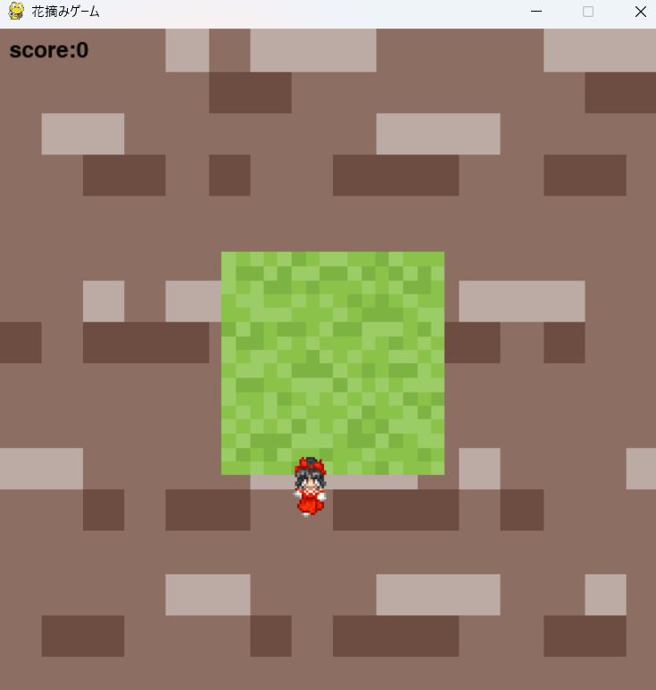
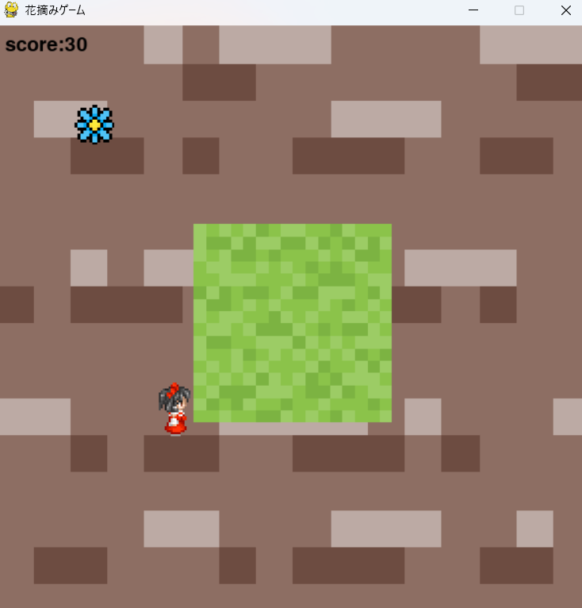
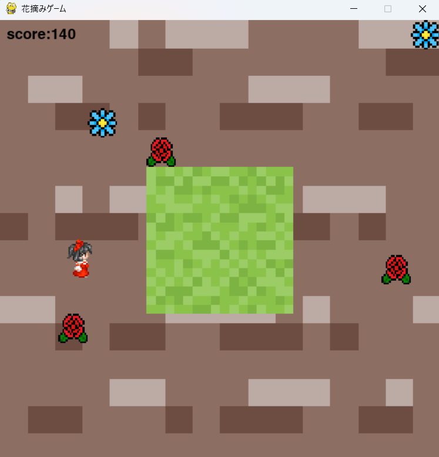
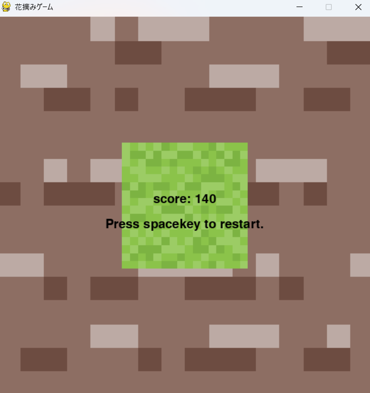
この「花摘みゲーム」は、プレイヤーがキャラクターを操作して、出現する花を摘むことを目的としたアクションゲーム。ゲームはpygameライブラリを使用して制作されている。
プレイヤーは、ゲーム画面上で自キャラを操り、ランダムに出現する花を取ることで得点を稼ぐことができる。花は一定の間隔で生成され、10秒の時間が過ぎると枯れてしまう。自キャラはWASDキーで移動し、ゲーム内でFキーやGキーを押すことで移動速度を調整することもできる。プレイヤーが花に触れると、スコアが10ポイント加算されるが、花が枯れてしまうとゲームオーバーになるため、戦略的に行動することが求められる。
2024年2月｜制作時間：約10時間
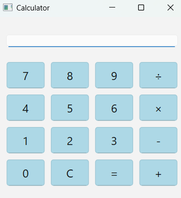
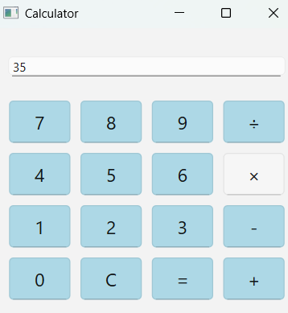
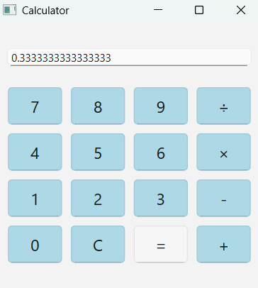
このプログラムは、PySide6を使用したシンプルな計算機アプリケーション。ユーザーはボタンをクリックして数字と演算子を入力し、基本的な四則演算（加算、減算、乗算、除算）が可能。
項が3つ以上の計算、小数点以下を含んだ計算はできない。入力する桁数に縛りはない。ゼロでの除算の場合はエラーを表示する。可読性と保守性を考慮し、アプリはcalculator_app.pyに機能が、main.pyにエントリポイントが分割されている。
2026年2月｜制作時間：約20時間
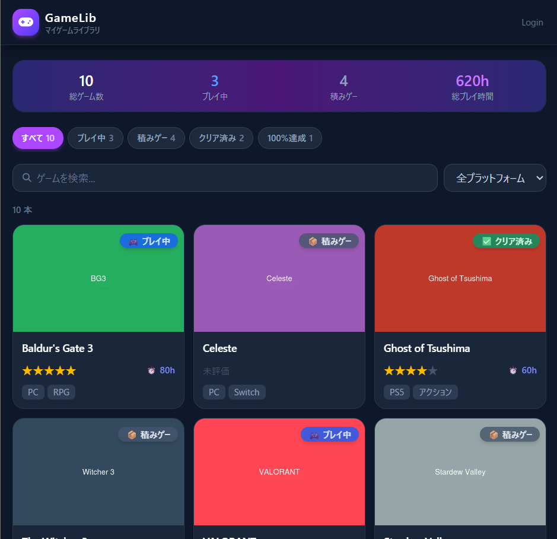
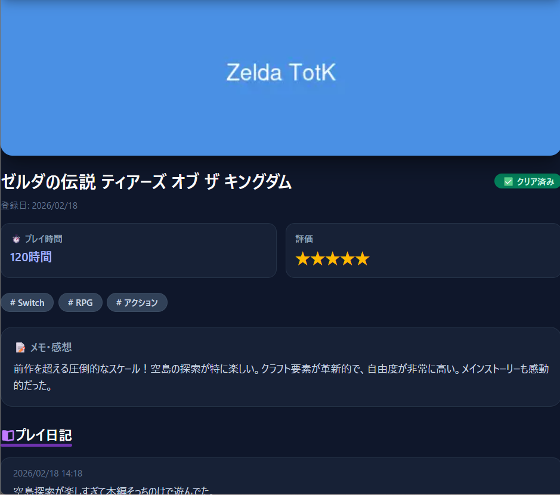
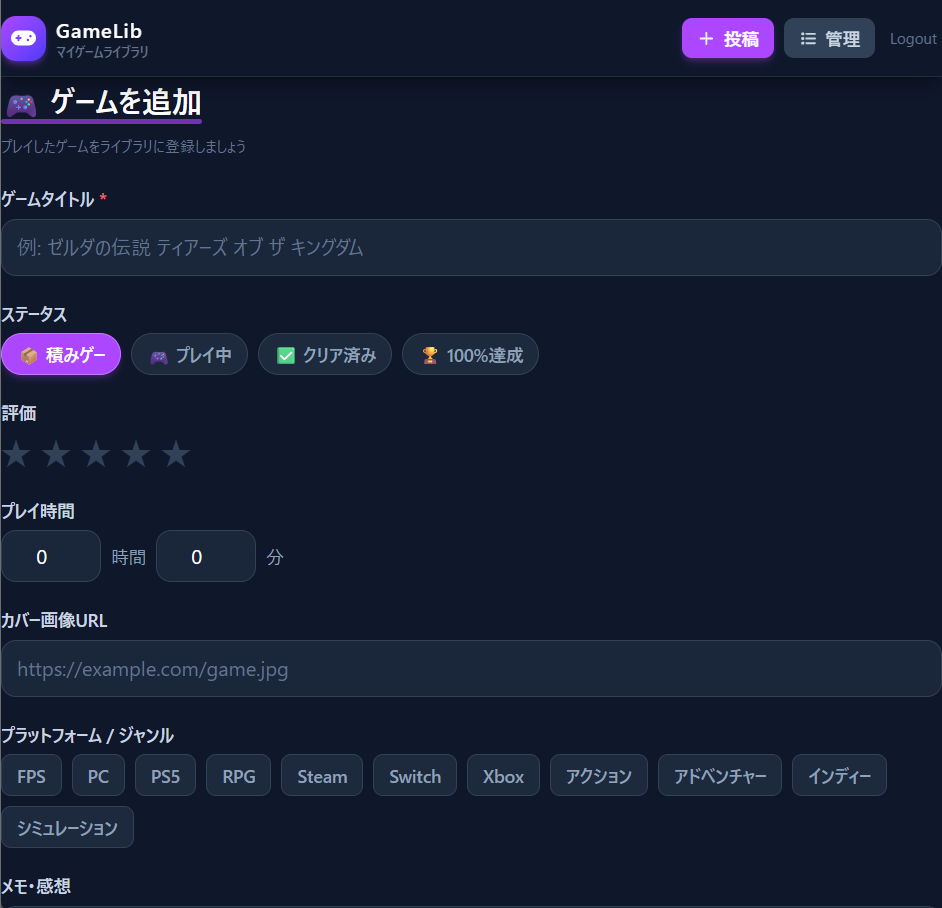
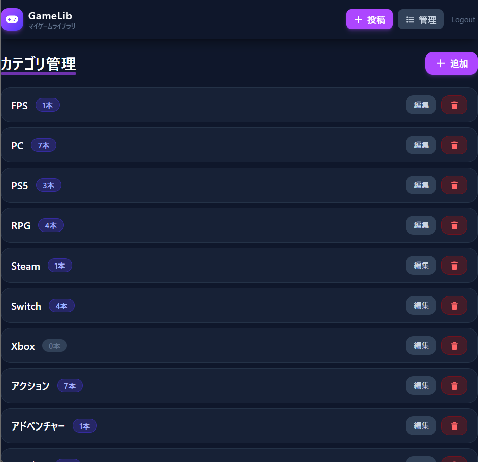
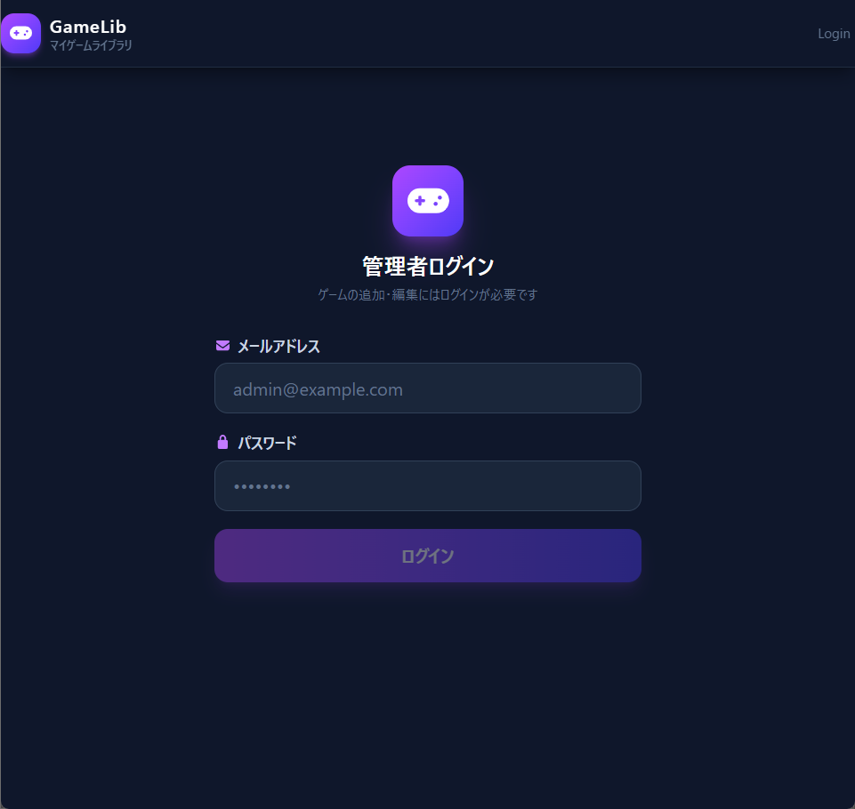
GameLibは、増え続ける「積みゲー」を可視化し、計画的に管理するために開発した個人向けWebアプリ。Next.js 15、TypeScript、Supabaseを用いた構成で構築されている。
各ゲームのプレイ状況（積みゲー / プレイ中 / クリア済みなど）を直感的に記録でき、総プレイ時間やクリア率を統計として算出する。特に「積みゲーが5本以上でアラートが表示される」仕組みを導入し、購買衝動を抑えて一本一本のゲームに向き合える工夫を凝らした。さらに、「日記機能」も搭載している。
Supabase Authによるログイン機能を用いている。第三者にはライブラリの閲覧のみを許可し、ゲームの登録・編集やプレイ日記の投稿といったアクションは管理者のみが行えるよう、ルートガードで保護している。